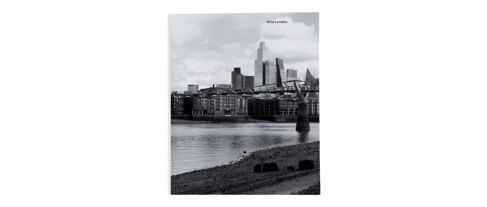
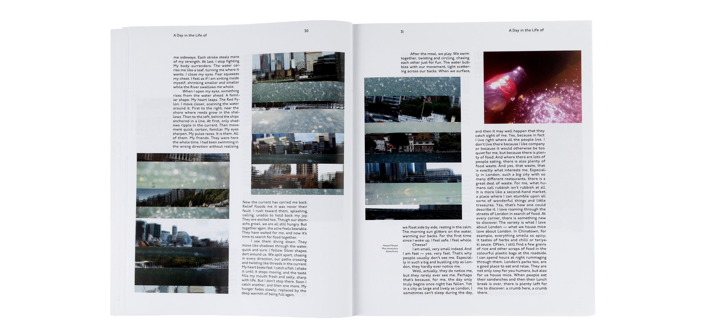
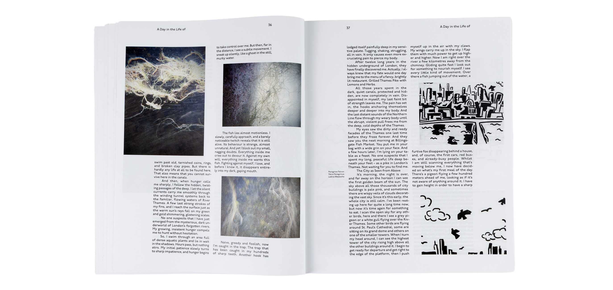
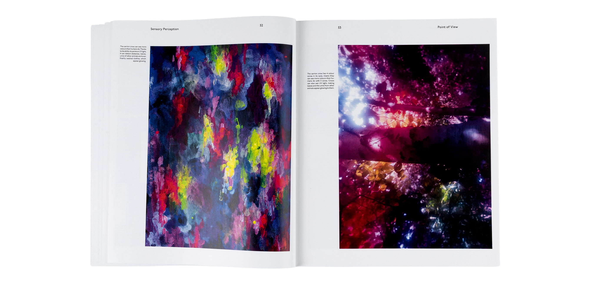
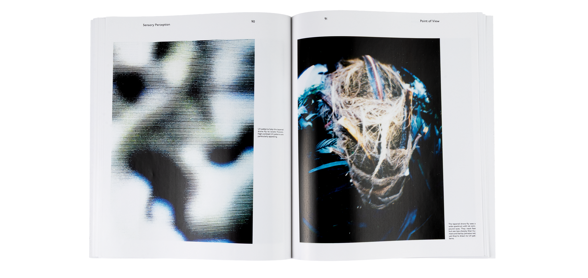
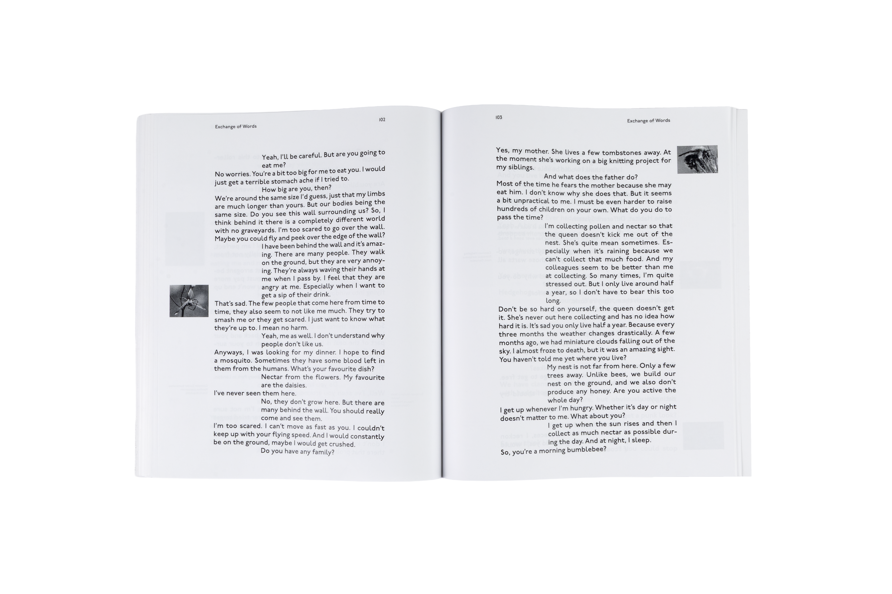
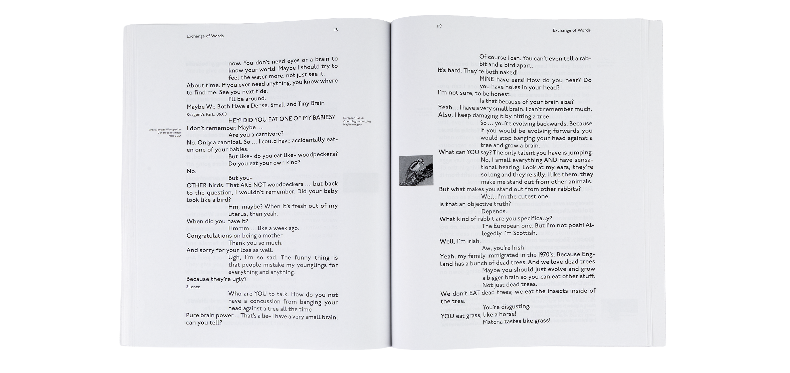
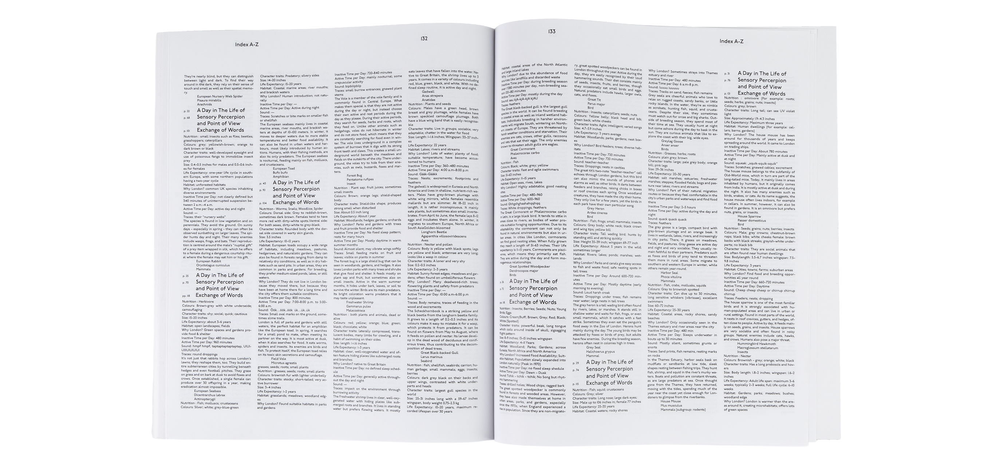
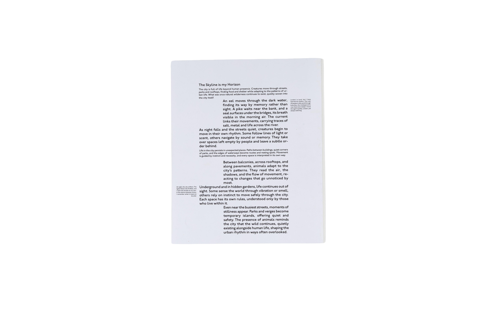

Projekte
About me
WILD LONDON
London moves like a system built on rhythm, repetition, and connection. The city is meticulously organised, yet its structures constantly overlap and unravel. This tension between order and chaos shaped my project.
Inspired by the public transport network, I developed a concept built on lines and cadence. The typeface P22 Underground, originally created for the London Underground, reinforces the system and forms the foundation for a clear, functional design.









London Editorial
Markus Wicki
Siiri Tännler
Silvio Waser
Valeria Bonin
Hanspeter Künzler
2025